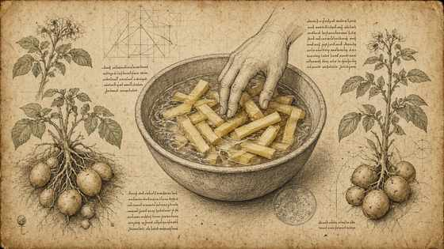
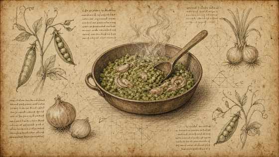
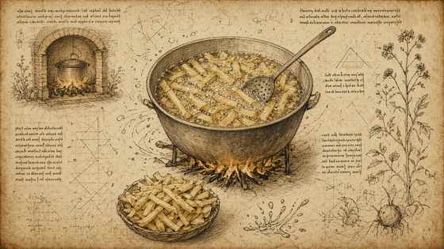
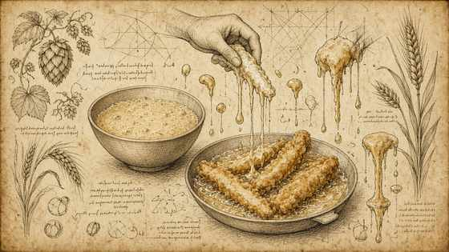
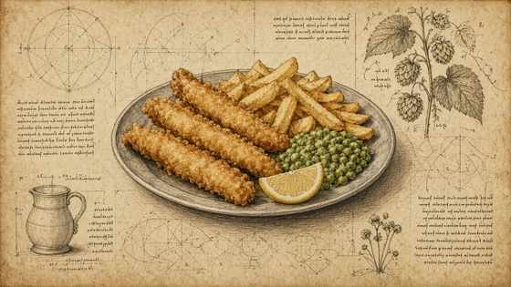

01
Pelare e tagliare chips lunghe regolari; tenere sotto acqua corrente per togliere l’amido.
Peel and cut long even chips; keep under running water to remove starch.

MasterChef Magazine · Ricetta III · Tutorial
MasterChef Magazine · Recipe III · Tutorial
Chips a due temperature, pastella farina-birra-aceto di malto-limone, piselli freschi allo scalogno. — struttura Fooby, tavole Leonardo; quantità solo se dette nel video.
Twice-fried chips, flour–beer–malt vinegar–lemon batter, fresh peas with shallot. — Fooby structure, Leonardo plates; quantities only if spoken on camera.
← Scheda del quaderno ← Notebook cardPelare e tagliare chips lunghe regolari; tenere sotto acqua corrente per togliere l’amido.
Peel and cut long even chips; keep under running water to remove starch.

Mushy peas: 1 scalogno (o cipolla) grossolano, pochettino di burro, rosolare; piselli freschi.
Mushy peas: 1 rough shallot (or onion), a little butter, brown; fresh peas.

Olio di semi a 130–140 °C: prima cottura chips senza colorire.
Seed oil at 130–140 °C: first chip fry without colouring.

Pastella: farina, birra, un po’ di aceto di malto e limone; riposo 15–20 minuti. Pesce a fingers, farina, pastella, friggere.
Batter: flour, beer, a little malt vinegar and lemon; rest 15–20 min. Fish fingers, flour, batter, fry.

Secondo passaggio chips a 170–180 °C; impiattare con mushy peas e sale.
Second chip fry at 170–180 °C; plate with mushy peas and salt.
